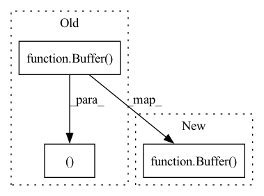

Pattern ID :26226

Before Change
def backward(ctx, grad_output):
x,y = ctx.saved_tensors
grad_x_inter = binary_op("b * pow(a, b-1.0)", x, y, Buffer(grad_output.shape))
grad_y_inter = binary_op("log(a) * pow(a, b)", x, y, Buffer(grad_output.shape))
return unbroadcast(binary_op("a*b", grad_output, grad_x_inter, grad_x_inter), x.shape), \
unbroadcast(binary_op("a*b", grad_output, grad_y_inter, grad_y_inter), y.shape)
// ************* movement ops *************
class Reshape(Function):
After Change
def backward(ctx, grad_output):
x,y = ctx.saved_tensors
tmp = Buffer(grad_output.shape)
grad_x = unbroadcast(binary_op("a*b", grad_output, binary_op("b * pow(a, b-1.0)", x, y, tmp), tmp), x.shape) if ctx.needs_input_grad[0] else None
grad_y = unbroadcast(binary_op("a*b", grad_output, binary_op("log(a) * pow(a, b)", x, y, tmp), tmp), y.shape) if ctx.needs_input_grad[1] else None
return grad_x, grad_y
In pattern: SUPERPATTERN
Frequency: 3
Non-data size: 3
Instances
Fragment ID: 78944706
Project Name: geohot/tinygrad
Commit Name: f177cd550f44050efeea4283e3216471c578428a
Time: 2022-06-06
Author: geohot@gmail.com
File Name: tinygrad/ops/ops_gpu.py
M Class Name: Pow
N Class Name: Pow
M Method Name: backward(2)
N Method Name: backward(2)
M Parent Class: Function
N Parent Class: Function
M File Name: tinygrad/ops/ops_gpu.py
N File Name: tinygrad/ops/ops_gpu.py
M Start Line: 104
M End Line: 107
N Start Line: 106
N End Line: 109
'>
Before Change
def backward(ctx, grad_output):
x,y = ctx.saved_tensors
grad_x = binary_op("a*b", y, grad_output, Buffer(grad_output.shape))
grad_y = binary_op("a*b", x, grad_output, Buffer(grad_output.shape))
return unbroadcast(grad_x, x.shape), unbroadcast(grad_y, y.shape)
class Pow(Function):
def forward(ctx, x, y):
ctx.save_for_backward(x, y)
After Change
def backward(ctx, grad_output):
x,y = ctx.saved_tensors
tmp = Buffer(grad_output.shape)
grad_x = unbroadcast(binary_op("a*b", y, grad_output, tmp), x.shape) if ctx.needs_input_grad[0] else None
grad_y = unbroadcast(binary_op("a*b", x, grad_output, tmp), y.shape) if ctx.needs_input_grad[1] else None
return grad_x, grad_y
'>
Fragment ID: 78944707
Project Name: geohot/tinygrad
Commit Name: f177cd550f44050efeea4283e3216471c578428a
Time: 2022-06-06
Author: geohot@gmail.com
File Name: tinygrad/ops/ops_gpu.py
M Class Name: Mul
N Class Name: Mul
M Method Name: backward(2)
N Method Name: backward(2)
M Parent Class: Function
N Parent Class: Function
M File Name: tinygrad/ops/ops_gpu.py
N File Name: tinygrad/ops/ops_gpu.py
M Start Line: 93
M End Line: 95
N Start Line: 94
N End Line: 97
'>
Before Change
def backward(ctx, grad_output):
shape_x, shape_y = ctx.saved_tensors
grad_x, grad_y = grad_output, unary_op("-a", grad_output, Buffer(grad_output.shape))
return unbroadcast(grad_x, shape_x), unbroadcast(grad_y, shape_y)
class Mul(Function):
def forward(ctx, x, y):
After Change
def backward(ctx, grad_output):
shape_x, shape_y = ctx.saved_tensors
return unbroadcast(grad_output, shape_x) if ctx.needs_input_grad[0] else None, \
unbroadcast(unary_op("-a", grad_output, Buffer(grad_output.shape)), shape_y) if ctx.needs_input_grad[1] else None
class Mul(Function):
def forward(ctx, x, y):
'>
Fragment ID: 78944703
Project Name: geohot/tinygrad
Commit Name: f177cd550f44050efeea4283e3216471c578428a
Time: 2022-06-06
Author: geohot@gmail.com
File Name: tinygrad/ops/ops_gpu.py
M Class Name: Sub
N Class Name: Sub
M Method Name: backward(2)
N Method Name: backward(2)
M Parent Class: Function
N Parent Class: Function
M File Name: tinygrad/ops/ops_gpu.py
N File Name: tinygrad/ops/ops_gpu.py
M Start Line: 83
M End Line: 84
N Start Line: 84
N End Line: 85